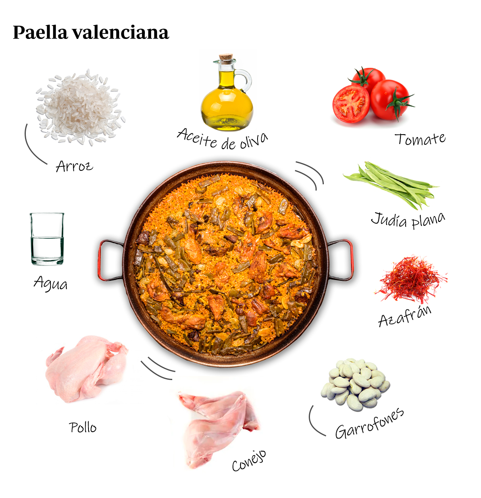

RECETA DE PAELLA VALENCIANA
Si te gusta la receta dale like

La paella valenciana es el plato español más conocido en el extranjero. Aquí encontrarás recetas de paella valenciana, paella mixta y de otras variantes. Según cada región de España, se puede elaborar la paella con diferentes ingredientes. La auténtica paella valenciana no lleva mariscos. Estás tan sólo a un click para ver las recetas y comenzar a preparar una maravillosa paella.Hay poca gente que no caiga rendida ante la paella valenciana. La Paella es probablemente la receta más aclamada, popular y conocida de nuestra gastronomía. Se trata del plato insignia de toda una región, el cual ha permitido que la riqueza culinaria española traspase fronteras.
Ingredientes para 4 personas:
INGREDIENTES
1- Para empezar, la paella valenciana es lo que su propio nombre indica: paella. Podemos hacer un arroz con rape y gambas, con costillas de cerdo y pimientos, con perdices o cocochas de bacalao (seguramente exquisitos), pero no será una paella.
400 gramos de Arroz Bomba
1 Kg. de pollo troceado
500 gramos de conejo troceado
200 gramos de judías verdes
100 gramos de garrofó fresco
100 gramos de tomate troceado
6 cucharadas de aceite de oliva
Unas hebras de azafrán
Pimentón rojo molido
Una ramita de romero
Sal
Elaboracion :
Vierte el aceite sobre la paella y enciende el fuego. Una vez el aceite esté caliente, añade el conejo y el pollo y sofríelos hasta que adquieran un color dorado.
Ahora vierte el tomate rallado y sofríelo del mismo modo, removiendo constantemente.Recuerda darle vueltas a las piezas de carne para que se hagan uniformemente.Hecha poco sal y pimienta para asi aumentar el sabor de la carne dandole asi un sabor mas destacado. Su color debe cambiar progresivamente dorandose. Podriamos echar cualquier clase de carne , conejo , costilla o pollo pudiendo mezclarlas tabien si asi deseamos. A continuación, echa las verduras y rehógalas.

Ahora es el turno del pimentón. Añádelo y remuévelo apenas un instante, enseguida tienes que verter el agua hasta los remaches de la paella para evitar que se queme. Añade el azafrán, el romero y la sal.
Una vez que el agua rompa a hervir, déjala unos 5 minutos en ebullición con fuego vivo. A continuación, baja a fuego medio y déjala cocer entre 20 y 30 minutos.
Aviva el fuego y añade el arroz. La forma tradicional de ponerlo es haciendo una cruz en el agua que está hirviendo y repartirlo de modo uniforme por la superficie del recipiente. Aprovecha ahora para probar y rectificar de sal. Manten el fuego fuerte durante unos 10 minutos y reduce el fuego a la mitad durante un tiempo parecido hasta que el arroz quede en su punto de cocción. ¡Buen provecho!